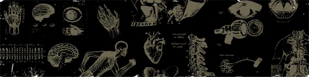
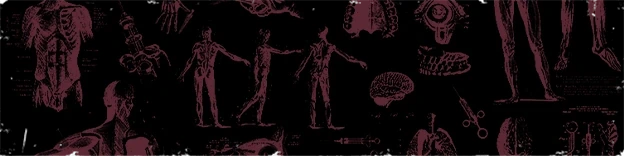
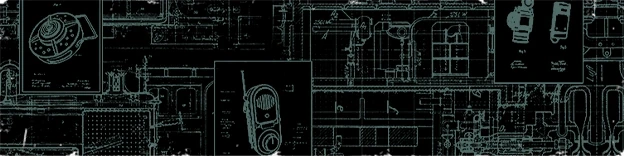

照红框买、照 选：强化剂优先点到位，技能装置等复发后再考虑



欢迎在下方评论、分享你的配装方案（无需注册登录，填上你的 Steam ID 名称即可留言）
这份攻略由社区共同维护。如果你觉得某处不正确、有遗漏，或想补充实战经验，欢迎点击下方按钮填写反馈问卷——你的每一条反馈都会让这份攻略更准、更全。
社区讨论区
欢迎在下方评论、分享你的配装方案（无需注册登录，填上你的 Steam ID 名称即可留言）